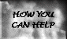

PERSONAL STORIES
"Love Story"
Tammam Ahmad Hasan Nuwwarah, "Uncle Tammam", aged 33, Ramallah
Right: Tammam and his wife at a children's party.
Tammam didn't like school and left in ninth grade to work as a hairdresser, a skill he had learnt from his father. However he had another hobby, video photography, which later evolved into a part time job as a cameraman with Nasr TV in Ramallah. On the first day of the clashes, he photographed 5 deaths including one man who was his close friend.
He liked to have fun and was always playing practical jokes on his friends. One friend recalls him putting salt instead of sugar into his tea. One day he was visiting his father-in-law in Jordan. He was making tea while his father-in-law was watching. Then he emptied the tea pot and filled it up with cold water. He held the pot and poured it on his father-in-law's head who started to scream not realising the water was cold.
Left: Tammam and his wife messing around in Ramallah's snow.
He had a cousin Nura who used to live in Jordan. One day she visited Palestine where she met Tammam who later became her husband. She says, "We loved and respected each other. We lived together 14 years and 26 days. I can still hear his voice calling me "Sweetheart" or "Honey." He used to talk like that on the phone from his workshop. Customers could hardly believe he was talking to his wife!
"He liked to watch TV, most of all Tom and Jerry cartoons. He would watch Tom and Jerry every morning even if it meant he was late to work. He used to start his day by putting on his radio to a Fairuz song and then wake me. We would drink coffee together, watching Tom and Jerry and then he would drive his car to work. Sometimes I would start the car myself asking him the daily question: What do you want me to make for lunch? And everyday he would answer, "Anything!"
Above: Tammam's wife, Tammam
and a friend in their living room.
"He liked cars, especially red ones. He dreamt of racing cars. The children around here loved him very much, and called him 'Uncle'. Even today when I drive his car the children in the neigbourhood will shout at me, 'That is Uncle Tammam's car! Not yours!'"
"We were so close. During the Intifada he worked for the Cairo-Amman Bank, travelling to Israel and other parts of the West Bank as a fieldworker. He was supposed to finish his work and go back as soon as possible but he always took me with him and we would walk around together instead of going back to work.
Above: Tammam (third from right), and colleagues.
"We would do silly things - like walking together, eating ice cream on the beach in winter. He would take me to picnics where he enjoyed smoking Nargileh (the Arabic "water pipe").
"He loved music. When he was young he learnt to play the electric organ. His favourite singer was Abdul Halim Hafez one of the great Arab singers. I remember him telling me that in his last year at school he wrote one of Abdul Halim's songs on an exam instead of answering the questions. He also liked Um Kulthum. Two of his brothers were good singers, performing at weddings and parties.
"On Thursday 26 September 1996, the second day of the clashes, I insisted on going out with him because the day before I was very scared after hearing him reporting the events on TV. As usual we drank coffee, watched Tom and Jerry, and went out together down to the checkpoint to cover the clashes. I even took onion with me afraid of being affected by tear gas (onion is one popular Palestinian antidote to tear gas)."
"When the helicopter started to shoot he convinced me to stay at a friend's apartment nearby. I waited for him there but started to worry and phoned him on his mobile. A stranger's voice answered me telling me that the owner of this mobile was lying in the hospital. I arrived at the hospital to discover that he was dead. I uncovered him. Looked at him. Touched him. He was warm and I kissed him. He was my angel."
Back to PERSONAL STORIES or on to the NEXT STORY